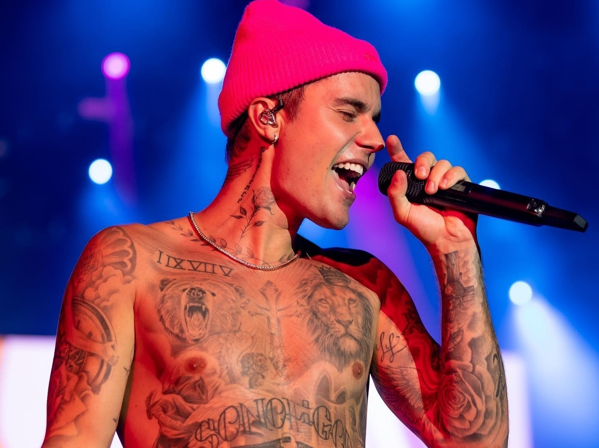

Justin Bieber nasceu em London, Canadá, no dia 01 de março de 1994. Filho de Jeremy Jack Bieber e Pattie Malette, ficou com a guarda da mãe após a separação do casal, quando estava com apenas 10 meses de vida. Com três anos de idade já mostrava aptidão para a música. Ainda criança já cantava na igreja que frequentava. Em 2006, com 12 anos, participou de uma competição local chamada Stratford Idol, onde os integrantes tiveram aula de canto. Bieber ficou em segundo lugar. Após a competição começou a postar os vídeos no YouTube, que foi visto pelo executivo de marketing Scooter Braun, que apresentou Bieber a alguns colegas que trabalhavam com música, entre eles os cantores Usher e Justin Timberlake.
Em 2008 Justin Bieber iniciou sua carreira quando assinou oficialmente com a Island Records. Em 17 de novembro de 2009 foi lançado o EP “My World”, que contou com a produção de The Drean e Tricky Stewart. Bieber trabalhou com as músicas Umbrella, de Rihanna e Single Ladies, de Beyoncé. O lançamento vendeu 137 mil cópias em sua primeira semana e recebeu o certificado de ouro e de platina. Os dois primeiros singles “One Time” e “One Less Lonely Girl”, lançados antes do EP, alcançaram o top 15 da Canadian Hot 100, e o top 20 da Billboard Hot 100. Os dois últimos singles “Love Me” e “Favorite Girl”, foram liberados no ITunes.
Bieber tornou-se o único artista da história da Billboard a ter quatro singles de estreia posicionado no top 40 da Billboard Hot 100 antes do lançamento do álbum. Em janeiro de 2010 foi lançado o single “Baby” e dois singles digitais “Never Let You Go” e “U Smile”. Nesse mesmo mês foi lançada a segunda parte do álbum “My world 2.0”, que estreou na 1.ª posição da Billboard 200, com vendagem de 283 mil cópias na primeira semana. Justin Bieber tornou-se o segundo artista a alcançar essa posição na parada, desde Stevie World. Recebeu o certificado Disco de Ouro no Brasil, pela ABPD. Em outubro desse mesmo ano chegou ao Disco de Diamante. Em 2011 Justin Bieber lançou o álbum “Never Say Never – The Remixes”. Nesse mesmo ano, lançou “Under the Mistietoe”. No ano seguinte, ele lançou “Believe” (2012) e para promover o álbum, começou a Believe Tour. Em 2013 lançou “Journals”, uma coletânea lançada para digital download no iTunes Store, que foi indicado a 12 categorias do Grammy Awards, mas não foi premiado. Ganhou sete prêmios do Billboard Music Awards. Em 2015, Justin Bieber começou a divulgar o seu novo single “What Do You Mean”, música do seu quarto álbum de estúdio, “Purpose”. A música se tornou o primeiro single número um de Bieber na Billboard Hot 100.
Bieber se tornou o artista masculino mais jovem a conquistar o topo da parada ganhando um Recorde Mundial do Guinness. O segundo single, “Sorry” e o terceiro “Love Yourself”, também conquistaram o topo das paradas. Em julho de 2016, Justin Bieber lançou o single “Cold Water” gravado com o trio EDM Major Lazer e a cantora dinamarquesa MØ que conquistou o n.º dois na para da Billboard Hot 100 dos Estados Unidos, tornando-se o segundo n.º dois do cantor. Em abril de 2017, os cantores porto-riquenhos Luis Fonsi e Daddy Yankess lançaram um remix para a música “Despacito”, com Bieber. A música foi a primeira em que Bieber cantou em espanhol. O remix elevou a música original ao Top 10 do Hot 100, e foi o primeiro top 10 em espanhol na Billboard Hot 100, desde Macarena, em 1996. Depois de vários singles gravados com outros cantores e diversas conquistas no topo das paradas musicais, Bieber não compareceu ao Grammy Awards de 2018, para apresentar a música indicada “Despacito”. Em 24 de dezembro de 2019, Bieber anunciou seu quinto álbum de estúdio e que iniciaria sua quarta turnê em 2020. Ele também anunciou o primeiro single do álbum, "Yummy", sendo lançado em 3 de janeiro de 2020. Em 31 de dezembro de 2019, Bieber também lançou um trailer anunciando sua série de documentários no Youtube intitulado “Justin Bieber Seasons”, que aparecerá em episódios às segundas e quartas-feiras, a partir de 27 de janeiro de 2020.

Oh, woah
Oh, woah
Oh, woah
You know you love me, I know you care
Just shout whenever, and I'll be there
You are my love, you are my heart
And we will never, ever, ever be apart
Are we an item? Girl, quit playing!
We're just friends? What are you saying?
Said there's another and looked right in my eyes
My first love broke my heart for the first time
And I was like
Baby, baby, baby, ooh, like
Baby, baby, baby, no, like
Baby, baby, baby, ooh
Thought you'd always be mine, mine
Baby, baby, baby, ooh, like
Baby, baby, baby, no, like
Baby, baby, baby, ooh
Thought you'd always be mine, mine
Oh, for you, I would have done whatever
And I just can't believe we ain't together
And I wanna play it cool, but I'm losing you
I'll buy you anything, I'll buy you any ring
And I'm in pieces, baby, fix me
And just shake me till you wake me from this bad dream
I'm going down, down, down, down
And I just can't believe my first love won't be around
And I'm like
Baby, baby, baby, ooh, like
Baby, baby, baby, no, like
Baby, baby, baby, ooh
Thought you'd always be mine, mine
Baby, baby, baby, ooh,like
Baby, baby, baby, no, like
Baby, baby, baby, ooh
Thought you'd always be mine, mine
When I was thirteen, I had my first love
There was nobody that compared to my baby
And nobody came to between us or could ever come above
She had me going crazy, oh, I was starstruck
She woke me up daily, don't need no Starbucks
She make my heart pound
I skip a beat when I see her in the street and
At school, on the playground
But I really wanna see her on the weekend
She knows she got me dazing
'Cause she was so amazing
And now my heart is breaking
But I just keep on saying
Baby, baby, baby, ooh,like
Baby, baby, baby, no, like
Baby, baby, baby, ooh
Thought you'd always be mine, mine
Baby, baby, baby, ooh,like
Baby, baby, baby, no, like
Baby, baby, baby, ooh
Thought you'd always be mine, mine
I'm gone
(Yeah, yeah, yeah)
(Yeah, yeah, yeah)
Now I'm all gone
(Yeah, yeah, yeah)
(Yeah, yeah, yeah)
Now I'm all gone
(Yeah, yeah, yeah)
(Yeah, yeah, yeah)
Now I'm all gone (gone, gone, gone)
I'm gone